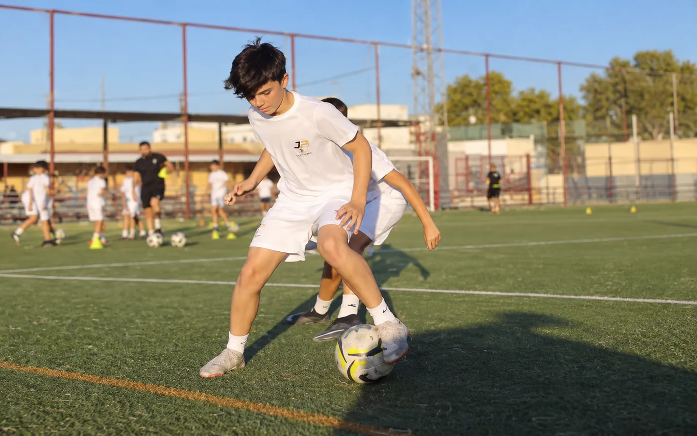
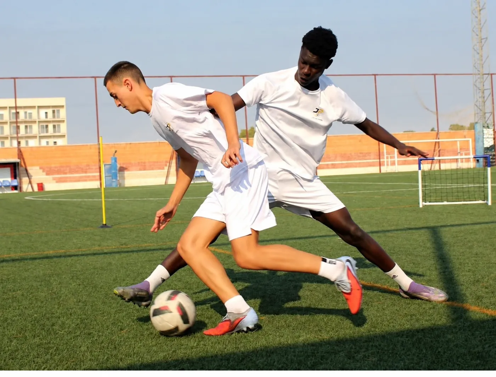
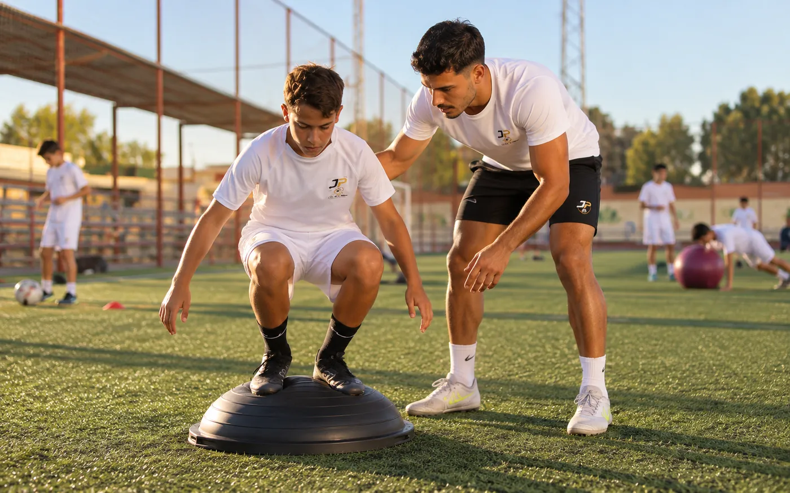
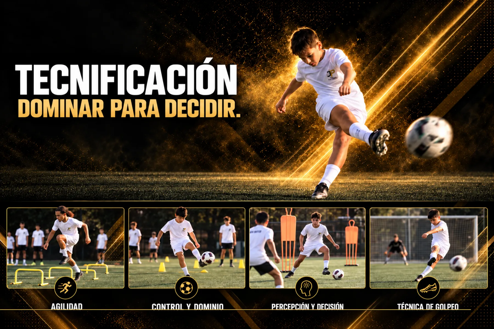
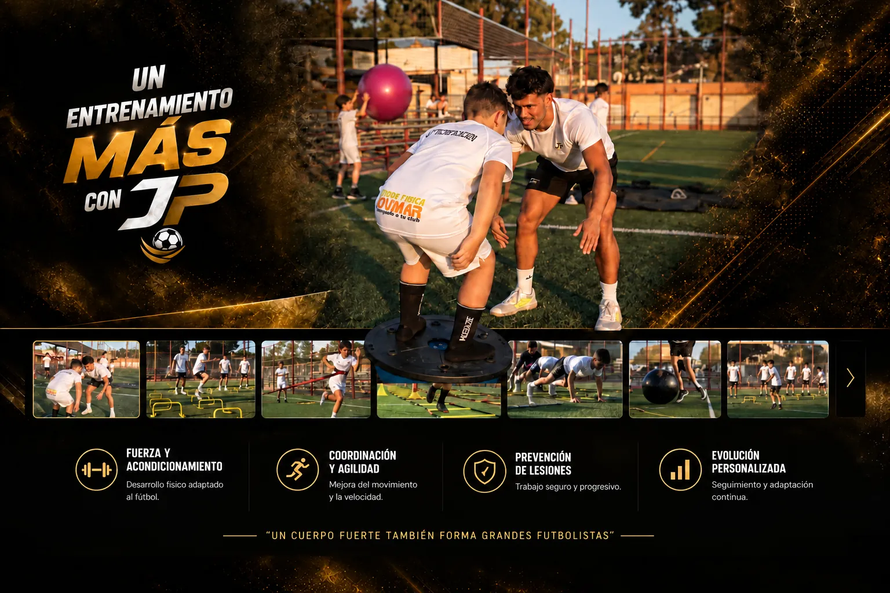
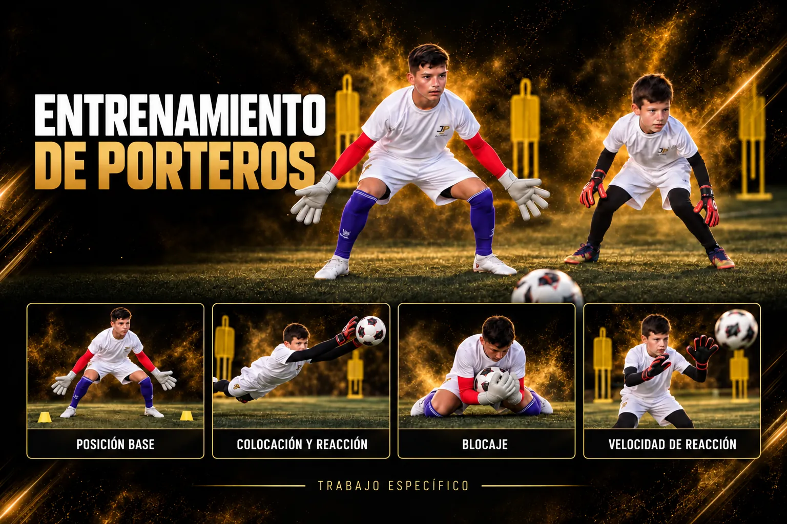
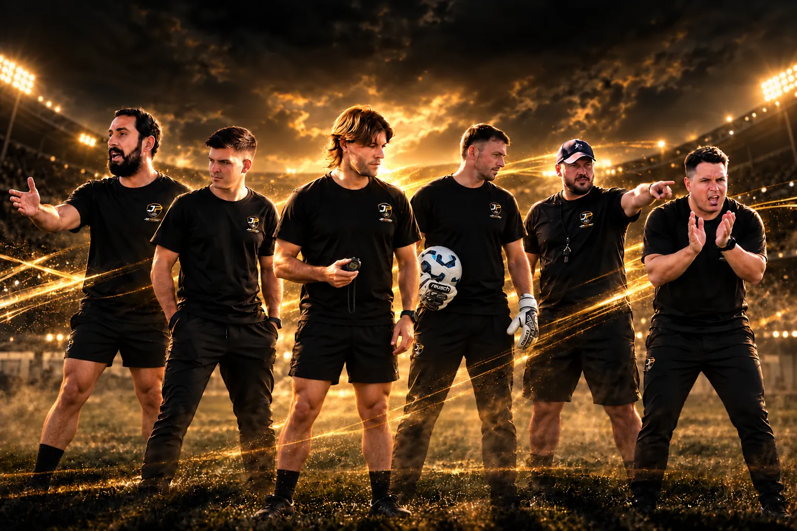
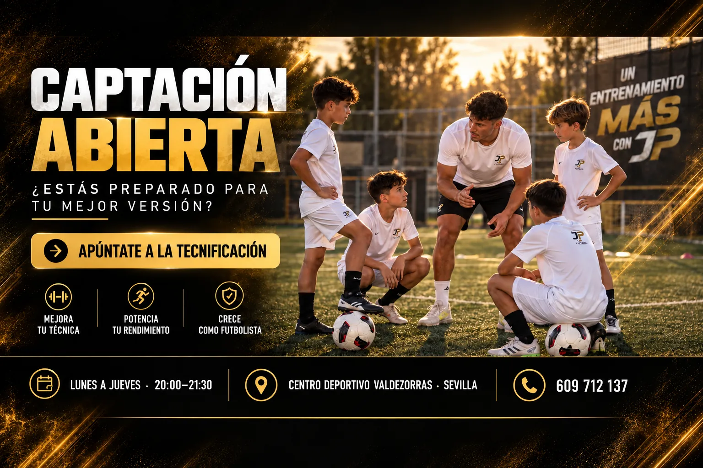
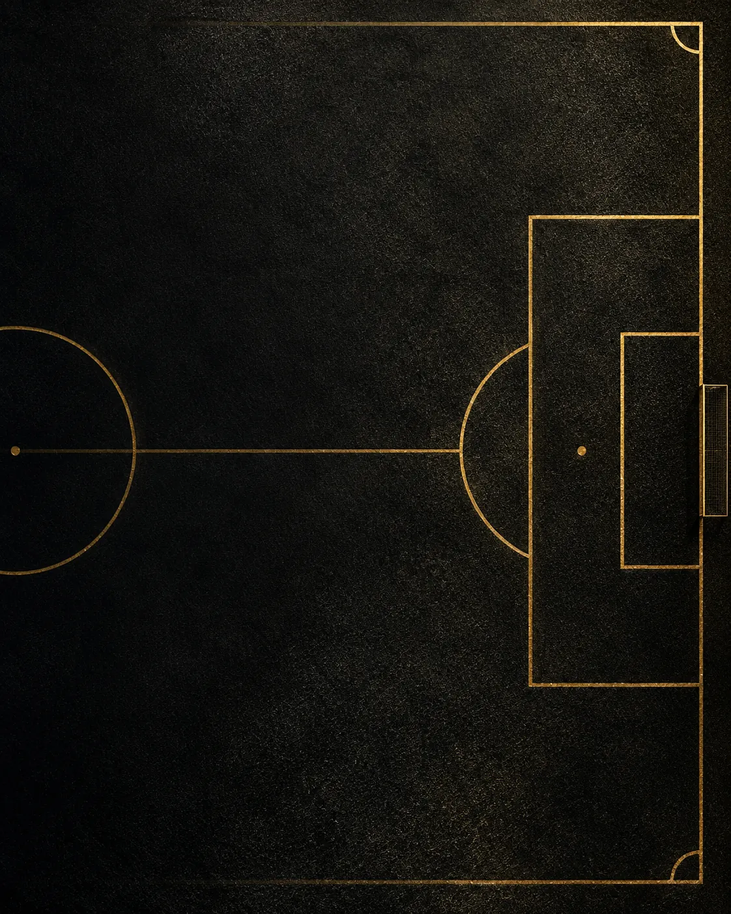

Entrenadistinto.Juega a otronivel.
Tecnificación, preparación física y entrenamiento de porteros en Sevilla. Grupos reducidos de chicos y chicas para que cada futbolista mejore su técnica, gane confianza y decida mejor en el campo.
El talento se entrena.
La confianza también.
JP Fútbol es una academia de tecnificación orientada al desarrollo individual de cada futbolista. Cada sesión combina aprendizaje, exigencia y acompañamiento.
- Adaptado a la edad y al nivelCada grupo trabaja a su ritmo, con objetivos claros para cada jugador y jugadora.
- Conectado con el juego realControl, pase, golpeo y decisión dentro de situaciones de partido.
- Seguimiento cercanoGrupos reducidos y un equipo técnico que conoce a cada futbolista.



Muchas formas de mejorar.
Un solo método.
El Método JP une técnica, táctica, físico, mente y vídeo en un mismo plan para que cada jugador y jugadora crezca dentro y fuera del campo.
- 01PercibirMirar antes de recibir y leer el juego.
- 02DecidirElegir la mejor opción en cada situación.
- 03EjecutarGesto técnico preciso, rápido y con las dos piernas.
- 04CompetirLlevarlo al partido con confianza y carácter.
8 modalidades · desliza para verlas

Tecnificación
Dominar para decidir.
Trabajo técnico aplicado a situaciones reales de juego: control, dominio, percepción, decisión y golpeo. En grupos reducidos para corregir cada gesto.
Técnico-táctica
Juntos se juega mejor.
Del trabajo individual al colectivo: situaciones de 1x1, 2x1, 3x2 y juegos reducidos donde cada jugador y jugadora aprende a combinar, ocupar espacios, presionar y defender en equipo.

Preparación física
Un entrenamiento que suma.
Preparación adaptada a la edad y al nivel para evolucionar con seguridad, confianza y continuidad: fuerza, coordinación, velocidad y prevención de lesiones.

Porteros y porteras
Cada acción cuenta.
Entrenamiento específico de portería: posición base, colocación, velocidad de reacción, blocaje y toma de decisiones bajo palos.
Toma de decisiones
Pensar rápido, jugar mejor.
Entrenamiento cognitivo aplicado al fútbol: tareas con estímulos de colores, números y señales que obligan a mirar, procesar y decidir antes de tocar el balón. Más atención, más velocidad mental y menos errores bajo presión.

Análisis de vídeo
Verse para mejorar.
Grabamos acciones de entrenamiento y, si la familia lo desea, de partido. Los místers las revisan con cada jugador y jugadora para corregir gestos, entender decisiones y marcar objetivos. Los vídeos quedan en el área de familias de la app.
Sesiones individuales
Un plan solo para ti.
Sesiones 1 a 1 o en pareja con un míster para trabajar un aspecto concreto: la pierna menos hábil, el golpeo, la vuelta tras una lesión o la preparación de una prueba. Plan a medida y seguimiento cercano.

Captación abierta
Tu siguiente nivel empieza aquí.
La puerta de entrada para conocer la metodología, el equipo y el plan de trabajo de cada futbolista. Ven a entrenar con nosotros y valoramos juntos por dónde empezar.
Encuentra por dónde empezar.
Responde tres preguntas y te recomendamos el programa y el pack que mejor encajan. El equipo de JP Fútbol lo concreta contigo después.
Packs y tarifas.
Elige cuántos días quieres entrenar. Reserva tu plaza en un minuto y el equipo te confirma grupo y horario.
Precios de ejemplo pendientes de confirmar por JP Fútbol. Muy pronto podrás pagar tu pack online desde el área de familias.
Forman, acompañan y exigen.
Un equipo técnico con una metodología común y una atención cercana a la evolución de cada futbolista.
Así se entrena en JP.
Sesiones reales en Valdezorras. Pulsa para verlas con sonido.
El área de familias, jugadores y jugadoras.
La app de JP Fútbol pone todo el seguimiento en el móvil: las familias ven la evolución de su hijo o hija y gestionan su pack, y los místers organizan cada sesión.
- Evolución de cada jugador/aSesiones hechas, asistencia y progreso por áreas.
- Calendario y reservasPróximas sesiones y cambios de día en un toque.
- Pagos de packsRenueva y paga el pack desde el móvil.
- Tareas y vídeosEjercicios para casa y vídeos de cada sesión.
Entrenamos en Valdezorras.
Un espacio para mejorar la técnica, la comprensión táctica y la preparación física, con entrenamiento específico de porteros y porteras.
- Días
- Lunes a jueves
- Horario
- 20:00 a 21:30
- Lugar
- Centro Deportivo Valdezorras, Sevilla
- Contacto
- 609 712 137

Centro Deportivo ValdezorrasSevilla · Lunes a jueves · 20:00 a 21:30Abrir en Google Maps¿Desde qué edad se puede entrenar?
Trabajamos con jugadores y jugadoras de distintas edades, con grupos adaptados a la edad y al nivel. Escríbenos y te decimos qué grupo le encaja.
¿Qué hay que traer a la sesión?
Ropa deportiva, botas para césped artificial y agua. Porteros y porteras, también sus guantes.
¿Puedo probar antes de apuntarme?
Sí, pide una sesión en captación abierta y el equipo te propone día para conocer la metodología.
¿Cómo se paga el pack?
De momento lo gestionas directamente con el equipo al reservar. Muy pronto podrás pagarlo online desde el área de familias de la app.
¿Preparado
para mejorar?
Escríbenos y te ayudamos a elegir grupo, programa y día.